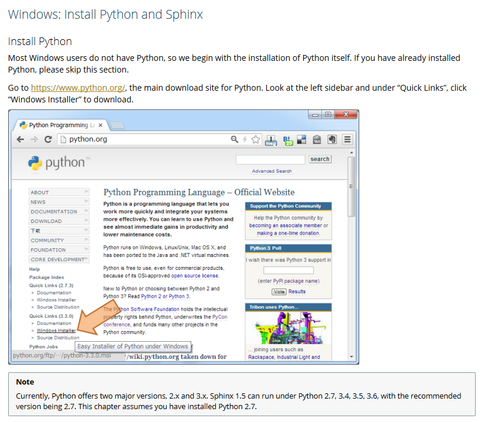
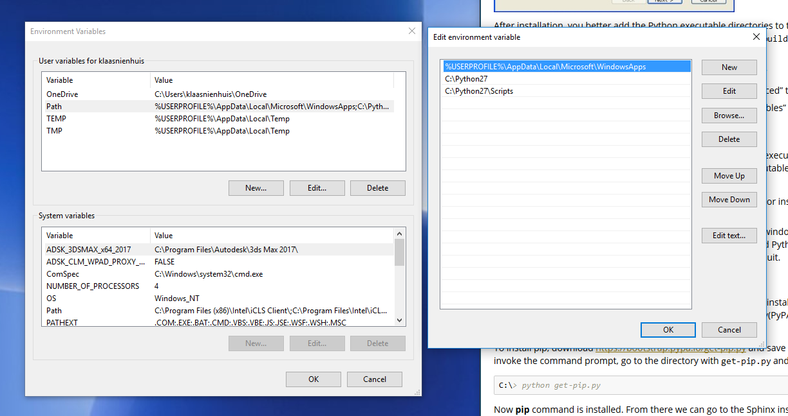

Installing Python¶
To work with sphinx documentation you need to install Python first. Since I work on Windows, I’ll follow that route. When you work on linux or ios you should be good already and you can skip this part.
Go to the Python homepage and download a compatible version. Spinx itself recommends version 2.7, so that’s what I got (2.7.13 to be precise). Follow along with the installation instructions.
Sphinx has a good installation guide here
Environment variables¶
Once installation has finished, it’s advised to add a few environment variables. Go to your control panel in windows and add this to your Path environment variables: C:\Python27;C:\Python27\Scripts.
Finding the environment variables in windows 10
Setup your environment values like so
Installing Sphinx¶
After you’ve installed Python, you need to install Sphinx. You can do this directly from within Python, given that you’ve got the pip module. This is the Python packet manager and it should be included in the latest Python versions.
Just type pip install sphinx in a command prompt and it should install all by itself.
Install Sphinx with pip in the commandline
Read the Docs theme¶
I like the looks of the Read the Docs theme, so I also install that by entering pip install sphinx_rtd_theme in a command prompt.